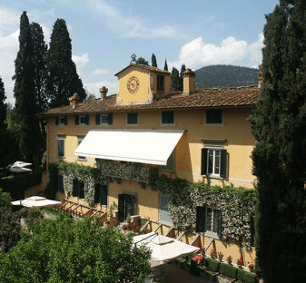
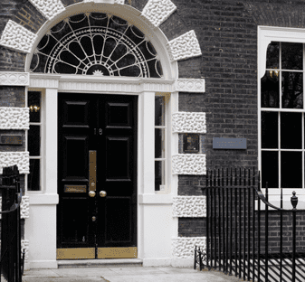

Partner institutions
Pilot programme participants
Bibliotheca Hertziana
Bildarchiv Foto Marburg
Fondazione Federico Zeri
The Frick Collection

I Tatti

Kunsthistoricsches Institut in Florenz
Collections available in 2023
Courtauld Institute of Art
Getty Research Institute
Institut National d’Histoire de l’Art
National Gallery of Art

Paul Mellon Centre
RKD – Netherlands Institute for Art History

Warburg Institute
Yale Center for British Art